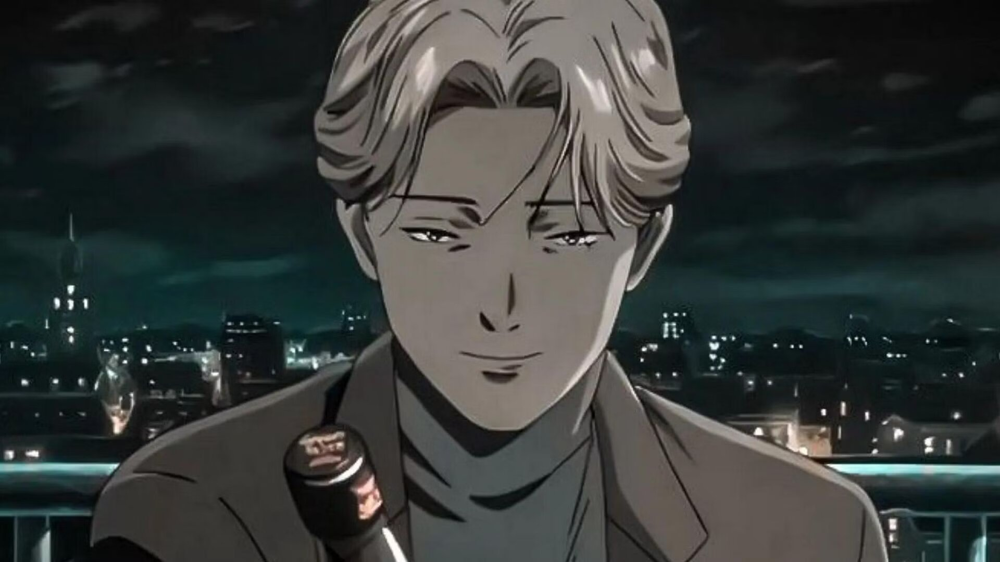
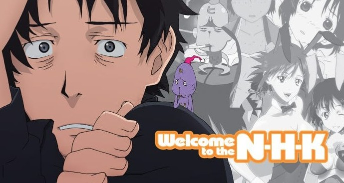
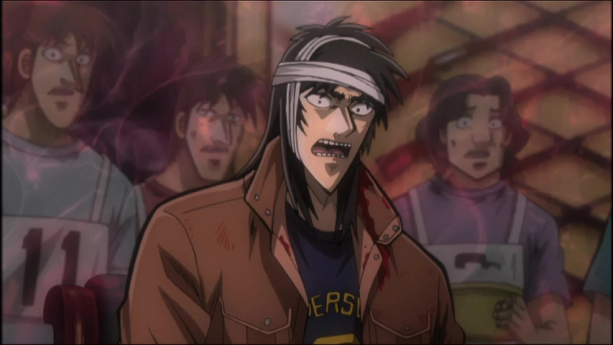
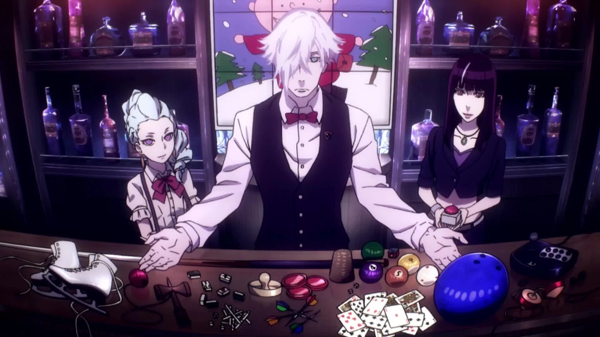
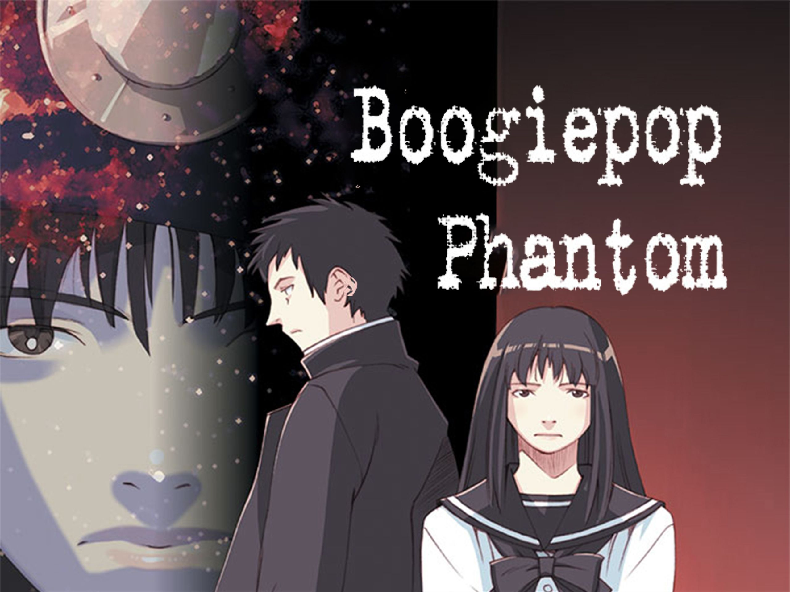
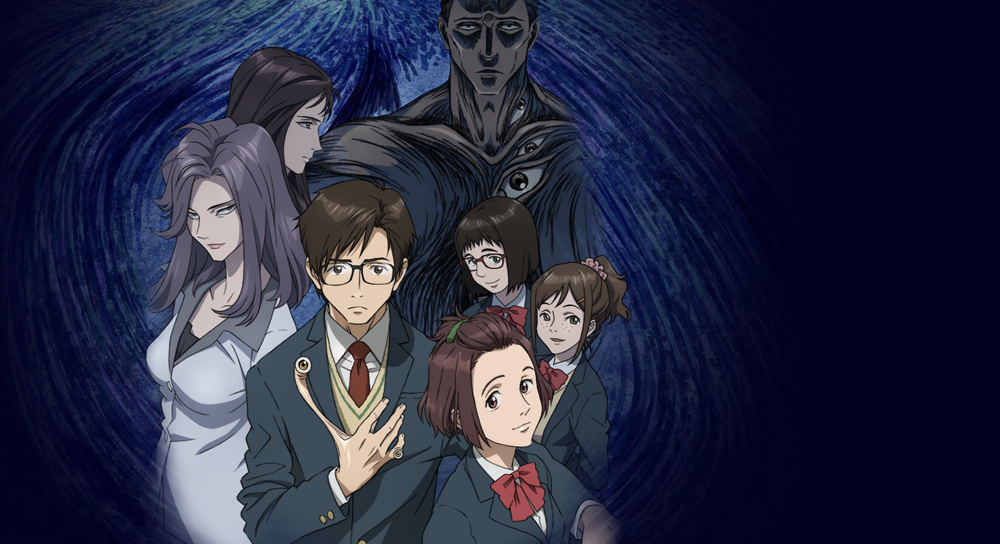
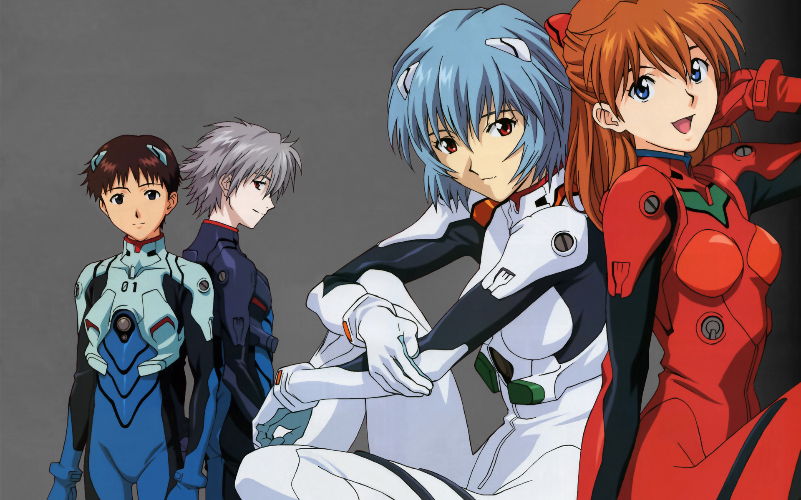
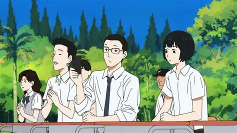
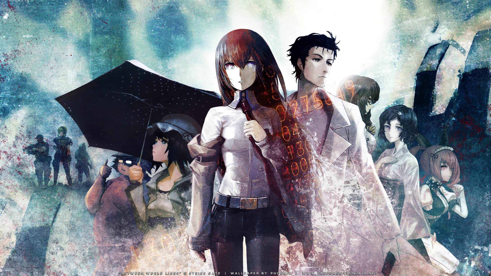

SMASH Senpai
Top 10 Psychological Anime That Will Mess With Your Mind
Psychological anime is not about monsters, jump scares, or cheap thrills — it is about the slow destruction of the mind. These stories explore **identity, paranoia, trauma, guilt, and existential dread**, forcing viewers to question reality, morality, and even their own sanity. The horror doesn’t scream — it whispers, lingers, and refuses to let go.
The most powerful psychological anime are deeply unsettling because they feel real. They portray mental breakdowns, unreliable perceptions, and emotional isolation in ways that blur the line between fiction and lived experience. Characters are pushed to their psychological limits, and as they fracture, the viewer fractures with them.
This list ranks the Top 10 Psychological Anime That Will Mess With Your Mind — series that challenge perception, distort reality, and leave lasting emotional impact. These are not easy watches. They are thought-provoking, disturbing, and often uncomfortable — but unforgettable.
Sponsored
#1 Monster
Monster is psychological horror grounded entirely in reality, making it far more disturbing than supernatural terror. The story follows Dr. Kenzo Tenma, a skilled neurosurgeon whose moral decision to save a child’s life leads to catastrophic consequences. That child grows up to be Johan Liebert — a calm, intelligent, and terrifying embodiment of human emptiness.
The horror of Monster is slow and methodical. Johan does not rely on violence alone; he manipulates people emotionally, ideologically, and psychologically. Ordinary individuals are pushed into committing horrifying acts simply through suggestion and exposure to their own suppressed darkness. This realism makes every moment deeply unsettling.
Monster explores themes of identity erasure, trauma, nihilism, and moral responsibility. It constantly asks whether evil is something people are born with or something created through environment and suffering. There are no easy answers, and no character is morally untouched.
Rather than shocking the viewer, Monster exhausts them emotionally. It dismantles the idea of justice and heroism, replacing it with ambiguity and dread. By the end, the true horror is not Johan — it is humanity’s capacity for cruelty when meaning disappears.

play anime smash or pass here (not sponsored)
SMASH SENPAI – Smash or Pass#2 Welcome to the NHK
Welcome to the NHK presents psychological horror through realism, isolation, and mental decay. The story follows Tatsuhiro Satou, a shut-in convinced that a conspiracy is responsible for his failure to function in society. What begins as dark comedy slowly reveals profound psychological damage.
The horror lies in relatability. Satou’s paranoia, self-loathing, and avoidance behaviors feel painfully authentic. His mind creates elaborate excuses to escape responsibility, trapping him in a cycle of fear and stagnation. Reality itself becomes threatening.
The anime explores depression, social anxiety, addiction, and delusion without romanticizing them. Moments of humor abruptly collapse into despair, making emotional whiplash a core part of the experience. Viewers are never allowed comfort.
Welcome to the NHK is terrifying because it reflects real psychological suffering. It exposes how easily isolation can warp perception, and how destructive unchecked escapism can become. This is psychological horror without monsters — only the mind turning against itself.
Sponsored
#3 Kaiji: Ultimate Survivor
Kaiji: Ultimate Survivor is psychological horror fueled by desperation and exploitation. The anime follows Kaiji Itou, a man crushed by debt and forced into deadly gambling games where losing means financial ruin — or worse.
The tension is suffocating. Every decision feels life-threatening, and every game is designed to psychologically dismantle participants. Betrayal, manipulation, and mental breakdowns are constant, creating relentless anxiety.
Kaiji exposes the cruelty of systems that profit from desperation. Wealth becomes a weapon, and human dignity is stripped away for entertainment. The horror is not the games themselves — it is how easily people turn on each other under pressure.
This anime traps viewers in stress and panic, mirroring Kaiji’s emotional collapse. Kaiji is psychological horror rooted in capitalism, survival instincts, and the fear of total failure.
#4 Death Parade
Death Parade explores psychological horror through judgment, regret, and moral ambiguity. Upon death, souls are forced into games that reveal their darkest traits, determining their final fate.
The horror lies in emotional exposure. Characters are stripped of social masks as fear brings out cruelty, selfishness, and despair. No one is purely innocent, and no decision is without consequence.
The anime challenges the concept of justice. Is it fair to judge someone at their most desperate moment? Are people defined by their worst actions? These questions haunt every episode.
Death Parade is quiet, somber, and emotionally heavy. It replaces fear with reflection, making viewers confront their own morality. The psychological weight lingers long after the games end.
Sponsored
#5 Paprika

Paprika is psychological horror through surrealism and dream logic. The story centers on a device that allows therapists to enter patients’ dreams — technology that quickly spirals out of control.
As dreams invade reality, identity fractures. The visuals become overwhelming, chaotic, and deeply unsettling. The viewer is constantly disoriented, unsure what exists and what does not.
Paprika explores the fragility of the human mind. Desires, trauma, and suppressed thoughts manifest violently once boundaries dissolve. Control becomes impossible.
The horror is not fear — it is loss of reality. Paprika overwhelms the senses, creating psychological unease that persists long after the film ends.
#6 Boogiepop Phantom
Boogiepop Phantom is fragmented psychological horror built on atmosphere and confusion. The narrative is nonlinear, forcing viewers to assemble meaning from broken perspectives.
Urban legends, trauma, and identity loss overlap, creating constant unease. The soundtrack and muted visuals enhance the feeling of emotional decay.
Characters are haunted by internal fears rather than external threats. The horror comes from alienation and emotional fragmentation.
Boogiepop Phantom feels like a waking nightmare — unsettling, abstract, and deeply psychological.
Sponsored
#7 Parasyte: The Maxim
Parasyte: The Maxim blends body horror with deep psychological tension, using alien invasion as a lens to question what it truly means to be human. Parasitic beings infiltrate human bodies, mimicking emotions while lacking empathy, forcing humanity into an existential survival crisis.
The psychological horror intensifies through Shinichi Izumi’s transformation. As he merges with the parasite Migi, his emotional responses begin to dull. Compassion weakens, fear fades, and logical survival replaces morality. Viewers are forced to confront an uncomfortable question: is emotional detachment a strength or the first step toward becoming a monster?
Parasyte refuses to present humans as innocent victims. Humanity is portrayed as equally violent, selfish, and destructive. The line between parasite and human blurs, creating moral ambiguity that makes every conflict unsettling rather than heroic.
The true horror of Parasyte is not gore — it is the realization that humanity’s defining traits may not be empathy or kindness, but adaptability and violence. The anime leaves viewers disturbed by how easily morality collapses when survival is at stake.
#8 Neon Genesis Evangelion
Neon Genesis Evangelion is psychological horror disguised as a mecha anime. Beneath its apocalyptic battles lies a brutal exploration of depression, loneliness, and self-worth. The true enemies are not Angels — they are the characters’ fractured minds.
Each pilot represents a different response to emotional trauma. Shinji’s crippling fear of rejection, Asuka’s fragile ego masking abandonment, and Rei’s loss of identity create a cast defined by internal suffering. The cockpit becomes a metaphor for isolation rather than heroism.
As the series progresses, narrative structure itself collapses. Reality fractures into internal monologues, symbolic imagery, and emotional confession. Viewers are no longer watching a story — they are trapped inside psychological breakdown.
Evangelion offers no comfort or resolution. It forces viewers to confront mental illness without romanticism, exposing how fear and self-hatred distort perception. The horror is deeply personal, uncomfortable, and enduring — making Evangelion one of anime’s most psychologically devastating works.
#9 Sonny Boy
Sonny Boy is existential psychological horror built on confusion, isolation, and the absence of meaning. A group of students is suddenly displaced into alternate dimensions governed by incomprehensible rules, stripping them of structure, authority, and purpose.
Unlike traditional narratives, Sonny Boy refuses explanations. Characters drift through worlds that reflect emotional states rather than logic. Power dynamics shift unpredictably, friendships fracture, and identity becomes unstable without societal labels to cling to.
The horror lies in emotional detachment. As survival becomes routine, apathy replaces fear. Characters lose motivation, direction, and connection, mirroring real-world existential despair. Silence and empty space become oppressive rather than peaceful.
Sonny Boy unsettles viewers by denying resolution. It captures the anxiety of growing up, the fear of insignificance, and the terror of freedom without guidance. This is psychological horror that doesn’t attack — it erodes.
#10 Steins;Gate
Steins;Gate transforms time travel into relentless psychological horror. What begins as playful experimentation quickly becomes a nightmare of irreversible consequences. Each attempt to fix the past deepens emotional trauma rather than resolving it.
The psychological burden placed on Okabe Rintarou is crushing. Trapped in looping timelines, he becomes the sole bearer of repeated loss, failure, and death. The weight of memory isolates him from those he’s trying to protect.
Unlike traditional sci-fi, Steins;Gate focuses on emotional exhaustion. Hope becomes dangerous, choice becomes punishment, and free will feels meaningless in the face of inevitable suffering.
The true horror lies in inevitability. No victory feels complete, and every success is haunted by what had to be sacrificed. Steins;Gate leaves viewers emotionally drained, proving that knowledge and power come at an unbearable psychological cost.
Play Smash or Pass on SMASH Senpai.
 PLAY SMASH OR PASS
PLAY SMASH OR PASS